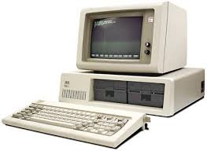
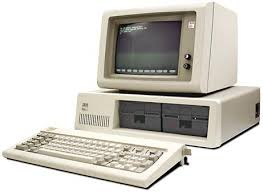

Os primeiros computadores (décadas de 1940 e 1950) usavam válvulas eletrônicas e eram extremamente grandes e lentos. Exemplos incluem o ENIAC e o UNIVAC
Introduzidos nos anos 1950 e 1960, os computadores de segunda geração usavam transistores, tornando-os menores, mais rápidos e mais confiáveis que os de primeira geração.
Na década de 1960, os computadores de terceira geração usavam circuitos integrados, que aumentaram a velocidade e a eficiência, além de reduzir ainda mais o tamanho das máquinas
A partir dos anos 1970, os microprocessadores marcaram a quarta geração, possibilitando a criação de computadores pessoais compactos e acessíveis.
 
